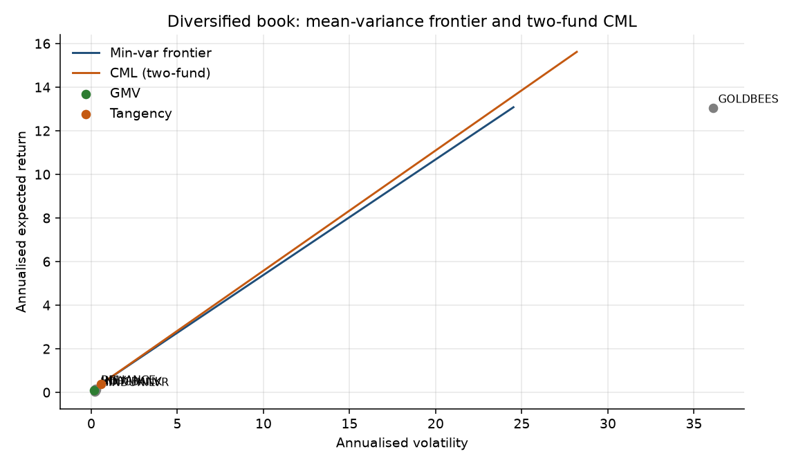
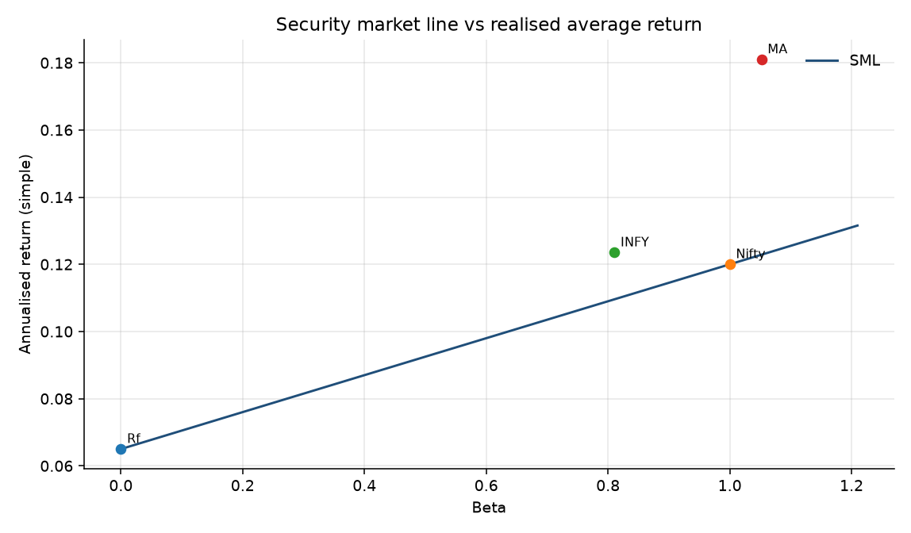
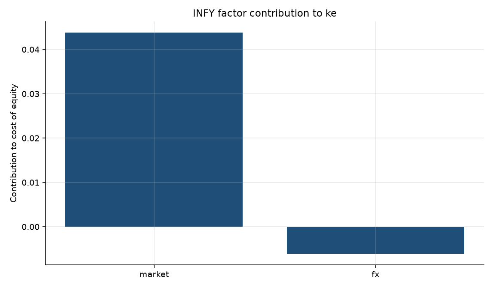
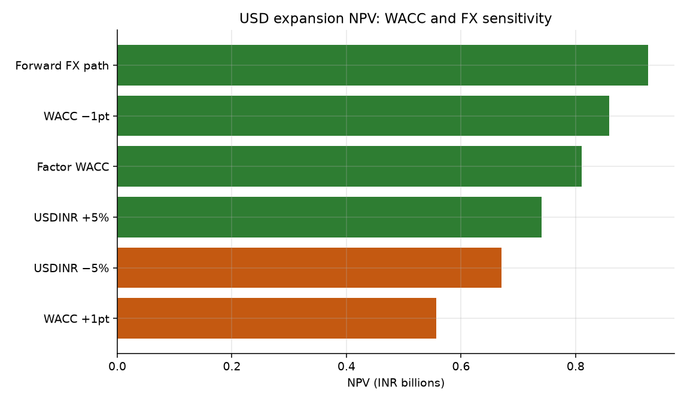
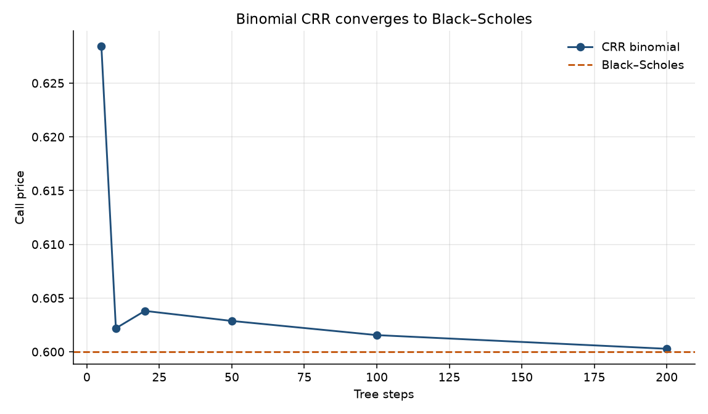
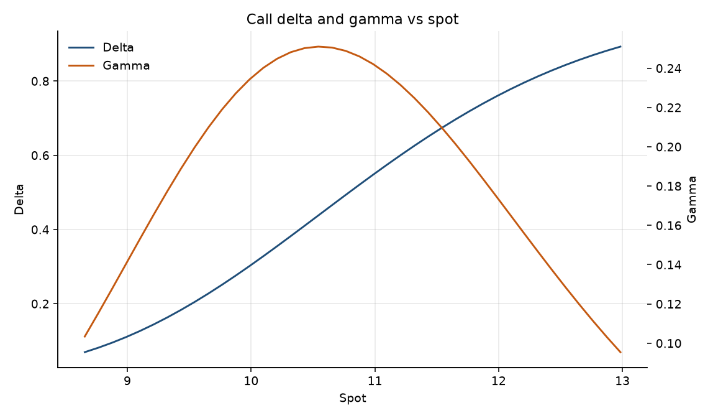
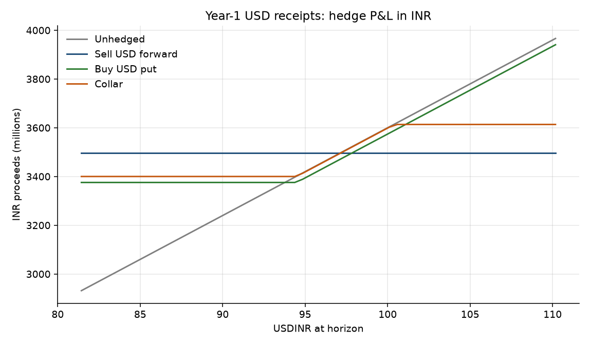
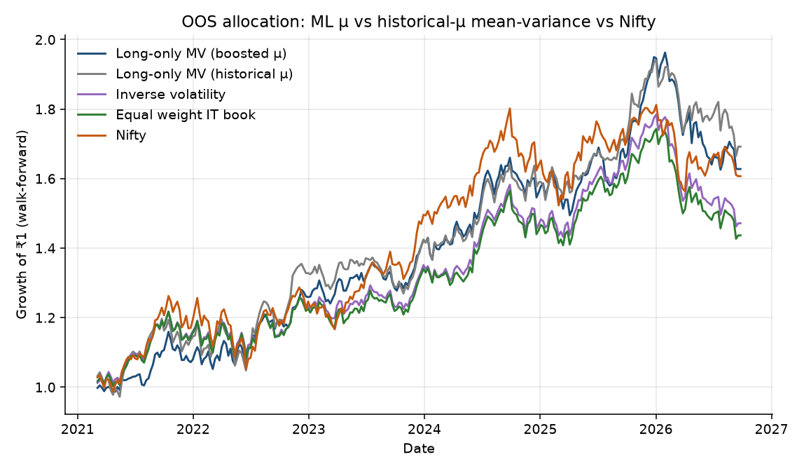

FX-Hedged Expansion Desk
Should the firm fund a USD 80m, 3-year expansion, and how should Treasury hedge year-1 USD receipts? Prices as of 2026-09-22 · pull 2026-09-22 00:26 UTC.
Required return and valuation
| INFY vs Nifty | MA vs S&P | |
|---|---|---|
| Beta | 0.81 | 1.05 |
| Jensen α (ann.) | 1.92% | 1.39% |
| R² | 0.23 | 0.53 |
| Cost of equity | 10.96% | 10.22% |
| Risk-free | 6.50% | 4.96% |
| Labelled ERP (in ke) | 5.50% | 5.00% |
| Sample ERP | 4.86% | 11.16% |
Equity weight 100.0% (market cap / (market cap + total debt)). Reported debt is negligible, so WACC equals the cost of equity. The bond shows YTM and duration; it does not change this NPV. Factor ke 10.27%. Gordon 845.9 vs screen 1,051.4 (24.3% to model). Implied g 6.16%. Bond YTM used as kd; modified duration 5.38.
Project NPV and Treasury hedge
| NPV unhedged / IRP forward path | +0.71bn / +0.93bn INR |
| Project IRR (unhedged INR CFs) | 15.98% |
| Salvage at year 3 | zero |
| FCF cut that sets unhedged NPV to zero | 8% |
| Year-1 USD notional | USD 36m |
| 25Δ put / collar net premium | 0.714 / 0.034 INR per USD |
| Asian vs vanilla 1y ATM call | 1.475 vs 2.514 |
| Listed call INFY K=11.00 2026-11-20 | mid 0.600 · BS 0.600 · IV 37.0% |
| Greeks Δ / Γ / ν / Θ | 0.507 / 0.2475 / 1.735 / -2.231 |
Prefer the 25Δ collar over 100% forwards: residual vol drops versus unhedged while keeping participation if USDINR rises (exporter-friendly). Use the Asian only if the desk will actually average monthly fixings; otherwise the vanilla put leg is cleaner.
Walk-forward ML challenger
| ML-MV | Selected hist-MV | Inverse vol | 1/N | Nifty | |
|---|---|---|---|---|---|
| OOS excess-return Sharpe | 0.25 | 0.30 | 0.09 | 0.05 | 0.22 |
| Beta vs Nifty | 0.59 | 0.69 | — | — | 1.00 |
| Jensen α (ann.) | 1.19% | 1.72% | — | — | — |
| Tracking error vs Nifty | 10.0% | 9.5% | — | — | — |
| Information ratio | 0.00 | 0.09 | — | — | — |
Selected rule: monthly, long-only shrinkage mean-variance using trailing historical returns, with a 35% position cap. Average OOS weights: INFY 21% · HDFCBANK 24% · RELIANCE 18% · HINDUNILVR 12% · GOLDBEES 25%. INFY RMSE GB 0.0375 · Ridge 0.0349 · expanding mean 0.0349. ML-MV beat Nifty, but did not beat the simpler historical-MV rule; GB also failed to improve INFY forecast error (sign hit near 50%). The historical-MV rule is therefore selected, while ML stays as a documented challenger and robustness test.
Exhibits







